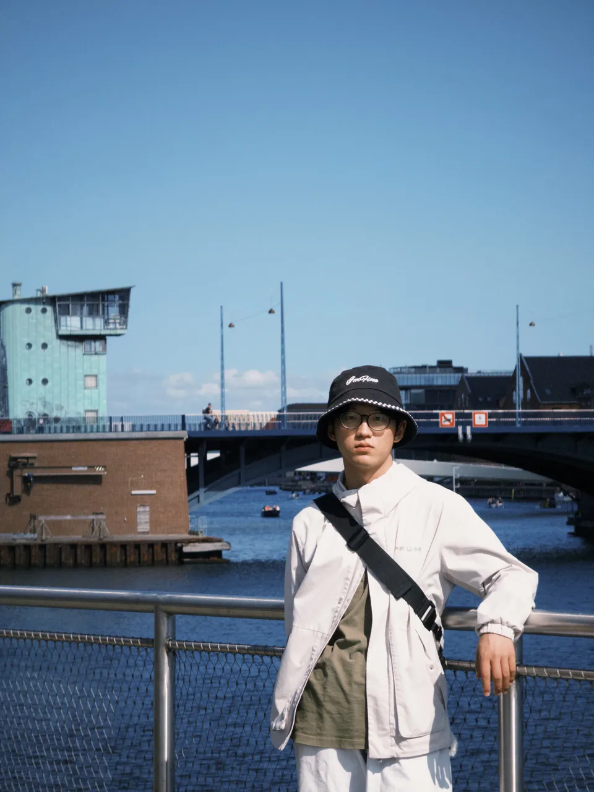

About me
I am Xiaole Hu. Now I am in my last year as an undergraduate student studying in Fudan University, Shanghai, China, majoring in Electronic Information Science and Technology. I plan to pursue a Ph.D degree in the future.
In the past year, I participated in FDUROP program, which provides research opportunities for undergraduate students in FDU. Under the supervision of Prof. Jie Ding, my research has focused on target controllability of complex networks, which is an interdisciplinary area between control theory and network science and has a strong relationship with graph theory.
Now I am conducting summer research at the Royal Institute of Technology (KTH), under the supervision of Prof. Qianwen Xu. My research mainly focuses on the local energy trading. I will develop a full-stack trading platform.
Research Interests
My research interests are as follows:
- Complex Networks
- Control
- Optimization
- Machine Learning
Publications
Updates will appear here.